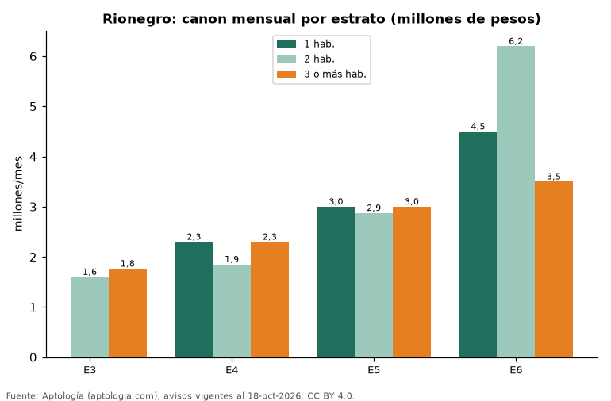

Arriendo en Rionegro por estrato y número de habitaciones: cuánto cuesta cada combinación (octubre 2026)
Estudio con datos abiertos (CC BY 4.0). Versión original: https://github.com/elbroker/aptologia-datos/tree/main/estudios/arriendo-por-estrato-y-habitaciones-rionegro-2026 · DOI: 10.5281/zenodo.23498934
En Rionegro, arrendar un apartamento de 2 habitaciones cuesta en la mediana 1.600.000 pesos al mes en estrato 3 y 6.200.000 pesos en estrato 6, 3,9 veces más. Por metro cuadrado, el canon va de 30.769 pesos a 54.545 pesos al mes según el estrato.
Resumen: analizamos 3.177 apartamentos en arriendo en Rionegro con estrato y habitaciones declarados.
Actualizado: 18 de octubre de 2026 (datos del 18 de octubre de 2026) · Próxima actualización: mensual.

Resumen
| Indicador | Valor |
|---|---|
| 2 hab., estrato 3 | 1.600.000 pesos |
| 2 hab., estrato 6 | 6.200.000 pesos |
| Diferencia | 3,9 veces |
| Avisos | 3.177 |
Canon mensual por estrato y habitaciones
| Estrato | 1 hab. (mediana) | 2 hab. (mediana) | 3 o más hab. (mediana) | Canon por m² | Avisos |
|---|---|---|---|---|---|
| 3 | — | 1.600.000 pesos | 1.765.000 pesos | 30.769 pesos | 252 |
| 4 | 2.300.000 pesos | 1.850.000 pesos | 2.300.000 pesos | 33.333 pesos | 1.096 |
| 5 | 3.000.000 pesos | 2.875.000 pesos | 3.000.000 pesos | 40.260 pesos | 1.615 |
| 6 | 4.500.000 pesos | 6.200.000 pesos | 3.500.000 pesos | 54.545 pesos | 200 |
Medianas del canon pedido, sin administración; — indica menos de 30 avisos en la celda.
Preguntas frecuentes
¿Cuánto cuesta arrendar un apartamento de 2 habitaciones en Rionegro? Entre 1.600.000 pesos (estrato 3) y 6.200.000 pesos (estrato 6) al mes en la mediana, según avisos de octubre de 2026.
¿Cuánto cuesta arrendar en estrato 3 en Rionegro? Un apartamento de 2 habitaciones en estrato 3 se pide en 1.600.000 pesos al mes.
Metodología
- Fuente: exportes nocturnos de la base de datos de Aptología (aptologia.com) del 18 de octubre de 2026: avisos vigentes de vivienda en portales inmobiliarios de 13 países, recogidos por Aptología y vistos en línea entre el 11 y el 18 de octubre de 2026. Corte: 18 de octubre de 2026.
- Depuración: se eliminan duplicados exactos (misma ciudad, zona, tipo, precio, moneda, área, habitaciones y baños) y los precios fuera del percentil 1–99 de cada país, operación, moneda y tipo; el precio por m² usa solo avisos con área declarada entre 12 y 2.000 m² y también se recorta al P1–P99.
- Qué se mide: precios pedidos (publicados), no precios de cierre. En arriendo, el canon mensual sin administración, gastos comunes ni condominio.
- Muestra mínima: cada cifra publicada se apoya en al menos 30 avisos; las celdas con menos se omiten.
- Colombia: Precios en pesos colombianos, sin conversión de moneda.
- Limitaciones: la cobertura depende de los portales que recorre Aptología en cada país y es mayor en las ciudades grandes y en los segmentos medio-alto y alto; el área es la que declara el aviso, sin verificar; los nombres de zona vienen de los portales.
- Privacidad: solo se publican agregados; no se publica ningún dato personal, enlace a avisos ni nombre de anunciante.
- Datos abiertos: datos.csv, licencia CC BY 4.0.
Cómo citar
Pinzón Pineda, D. M. (2026). Arriendo en Rionegro por estrato y número de habitaciones: cuánto cuesta cada combinación (octubre 2026). Aptología (aptologia.com). https://github.com/elbroker/aptologia-datos/tree/main/estudios/arriendo-por-estrato-y-habitaciones-rionegro-2026. Datos: datos.csv, licencia CC BY 4.0.